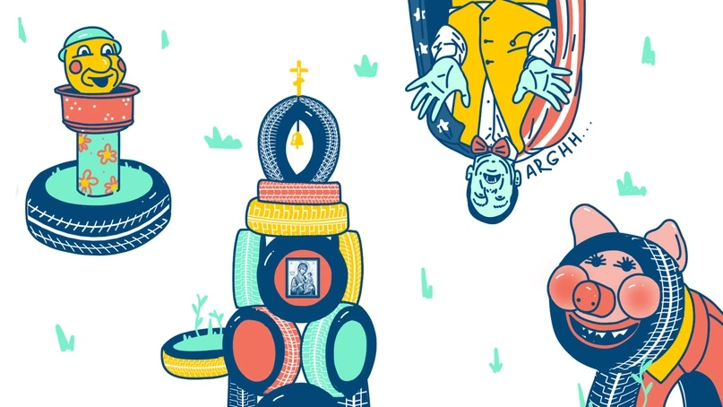

Данила Блюз снова ищет мистику в обрыдлой повседневности. На этот раз он расскажет, почему наша Родина еще не пала под натиском врагов и при чем тут страсть русских украшать свои дворы ЖЭК-артом.
Кто знает, почему мы все еще не покатились в тартарары? Каждый наш день страшнее предыдущего, снаружи мы окружены кольцом хищников, внутри страну разрушают лжецы и идиоты — все однозначно указывает на то, что скоро придет пиздец. Но у уличных пророков уже руки затекли держать картонки с надписью: “Конец близко”. Пиздец не приходит.

Христианская церковь верит, что пока за нас молится хотя бы один человек, у этого мира есть шанс. Индусы ждут, когда Брахма ляжет спать. Новая церковь от “Марвел” утверждает в своих писаниях, что мир от апокалипсиса охраняет команда сверхлюдей в трико. Каждый ищет спасения по-своему.
В дохристианской языческой древности славяне оберегали свои селения с помощью деревянных истуканов. Это были либо славянские божества вроде Перуна, Сварога и Хорса, либо тотемные животные, которые отпугивали бесов, упырей и прочую нечистую силу. Истуканам постоянно делали подношения, всячески украшали их. В частности, мазали кровью убитых животных, отчего идолы приобретали соответствующий специфический цвет.
Когда пришло на Русь христианство, большинство этих идолов порубили на дрова. Только некоторые особо глухие племена остались верны своим верованиям, продолжая почитать истуканов. Затем, как известно, к власти пришли коммунисты, и верить можно было только в Карла Маркса, Ленина и коммунизм. Заметьте, что здесь аналогичное с христианским триединство. Маркс здесь Бог Отец, Ленин — Христос, потому что не просто воплотил в жизнь марксово учение, но и дополнил его, так же как Иисус в Нагорной проповеди дополнил Библию. Ну а коммунизм, собственно, коммунистическая идея — это такой абстрактный Святой Дух, который повсюду, живет в каждом, нужно только захотеть увидеть его. Одновременно он же и аналог Царствия Небесного, где все будут жить в мире и любви, непонятно почему. Но, несмотря на схожесть с христианством, коммунизм, конечно же, исключал всякую мистику, а потому народ впал в оголтелый материализм, начал оскотиниваться и утратил всякую тягу к потустороннему.
Потом Советский Союз распался и мистика начала литься в мозги россиян изо всех возможных щелей: по телевизору — Кашпировский, по радио — Чумак, в газетах — Павел Глоба, а на улицах — цыганки-гадалки. Тут же начали плодиться и секты разных мастей. Верить во что-то хотелось, но во что — непонятно. Между тем страна пребывала в плачевном состоянии — все либо разворовывалось, либо ломалось. В частности, страдали дворы и детские площадки. У подъездов ломали лавочки, качели и турники сдавали на металлолом, песок из песочниц растаскивали сами жители, чтобы дома замешать раствор для ремонтных работ. Тогда особо сознательные граждане взяли дело в свои руки и начали благоустраивать дворы сами. Тут-то и зародился пресловутый ЖЭК-арт.
Разрушенные дворы постепенно заселили какие-то дикие чудовища из покрышек, ведер и пластиковых бутылок, деревья обросли самодельными антропоморфными скворечниками, из говна и веток граждане создали новые тотемы, новых идолов.
На фоне мракобесия, соседствующего с безверием, в гражданах начали шевелиться их древние корни. Людям стало не на что опереться, изменившийся мир пугал их точно так же, как когда-то пугал их древних предков. И как их древние предки, люди начали заговаривать этот мир, населяя его божествами-охранителями.
Самодельные ЖЭК-артовые уродцы — это родственники тех самых языческих истуканов, что когда-то охраняли славянские поселения. Тут даже неуместна приставка “арт” (искусство), потому что искусство — это всегда тщеславие, оно всегда авторское. Искусство, оно не настоящее, оно — продукт самолюбования, из разряда “смотрите, как я могу”. Даже само слово происходит от слова “искус”, то есть искушение гордыней.
В древности не было никакого “искусства” и, соответственно, автора тоже не было. Человек, создающий что-то, становился как бы проводником высших сил, они говорили через него, в этом не было его заслуги. Потому большинство древних летописей, статуй и фресок не имеют автора. Так же и с ЖЭК-артом: никто не оставляет автографов на своих работах, все они безымянные. При этом обратите внимание: так же как и идолы или иконы у древних, произведения дворовой скульптуры почти все исполнены в одной технике, почти все, за редким исключением, будто бы созданы одной рукой. Что это, как не охранительные тотемы?
Быть может, России не пришел пиздец как раз потому, что во дворе какой-то местный шаман соорудил мишку из старых, валявшихся в гараже покрышек? Или, может, вырезал из шины лебедя? Кстати, в индуизме верховное божество Брахма летает именно на лебеде, который некогда отложил космическое яйцо, из которого появилась Вселенная. Не зря лебедь так популярен в ЖЭК-арте.
А посмотрите, как корежит врагов России от этих тотемов, как все эти упыри и лешие вроде Варламова потешаются над ними, призывают уничтожить эту “пошлость” и реорганизовать дворы на иноземный манер. Ну нет! Обама с Меркель потому и не сломили нас своими вредоносными гомоэгрегорами — Россию бережет армия потрепанных идолов.
Когда настает ночь и враги уже тянут свои лапы к самым лакомым кускам нашей Родины, они оживают и нещадно бьются с силами тьмы за наше с вами стабильное завтра. Рим от варваров спасали гуси, а современную Россию спасают лебеди из старых покрышек.